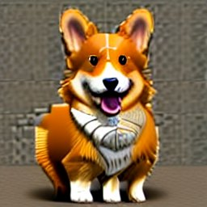
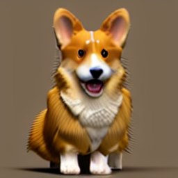
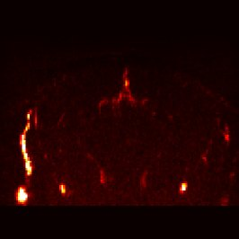
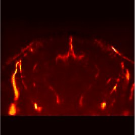
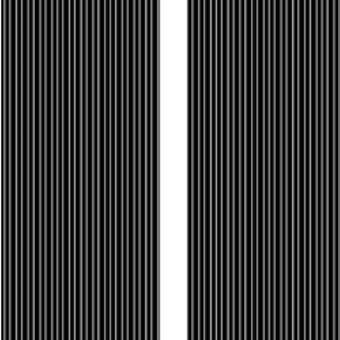
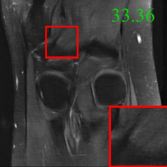
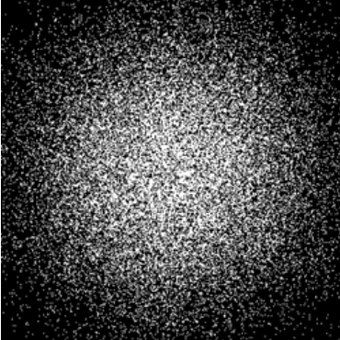
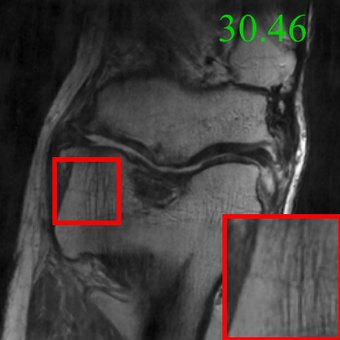
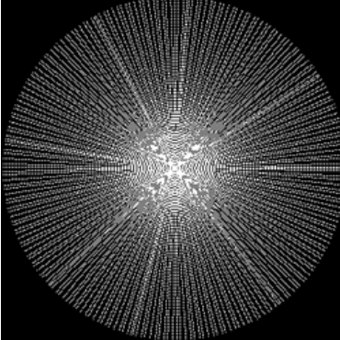
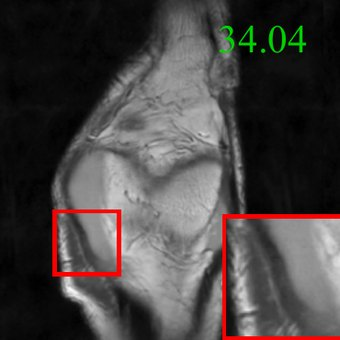

Aditi Chandrashekar
Courant Institute, NYU

I am a second-year Ph.D. student in CILVR at NYU Courant, advised by Professors Eero Simoncelli, Kyunghyun Cho, and Rob Fergus. I am grateful for the mentorship of Professors Bahareh Tolooshams, Anima Anandkumar, Soon-Jo Chung, and Katie Bouman during my time at Caltech.
My research focuses on learning representations of video dynamics that are predictive, structured, and physically plausible. I am motivated by questions at the intersection of AI, neuroscience, and vision.
For more info, please find my CV here.
News
I am a recipient of the 2026 NSF Graduate Research Fellowship.
I graduated from Caltech!
I will be starting my PhD at NYU Courant this Fall!
Publications


w/ EquiRegEquiReg: Symmetry-driven regularization for physically grounded diffusion-based inverse solvers
TMLR 2026 [paper]


VARS-fUSI: Variable Sampling for Fast and Efficient Functional Ultrasound Imaging using Neural Operators
In Preparation [paper]






A Unified Model for Compressed Sensing MRI Across Undersampling Patterns
CVPR 2025 [paper]